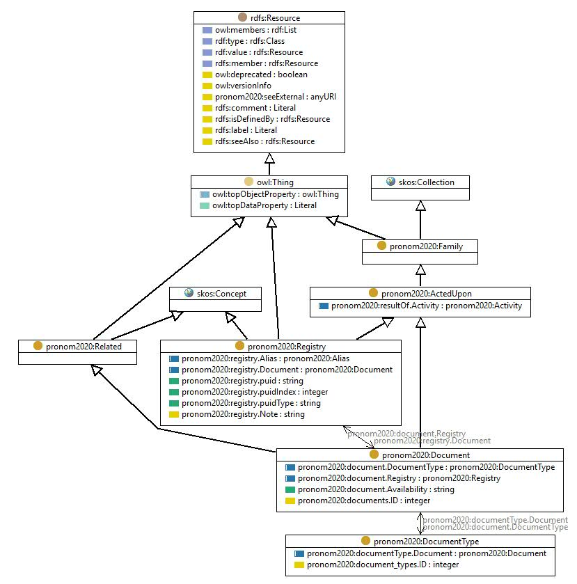

http://data.nationalarchives.gov.uk/formatregistry/def/Document
Class pronom2020:Document

rdf:type
owl:Class
rdfs:comment
Documents that perform some role with respect to fileFormats, documentation, etc
rdfs:label
Document
rdfs:subClassOf
pronom2020:Related
pronom2020:ActedUpon
skos:prefLabel
Document
skos:topConceptOf
pronom2020:PRONOM
References
as rdfs:domain (
pronom2020:documents.ID
,
pronom2020:document.Registry
,
pronom2020:document.DocumentType
,
pronom2020:document.Availability
)
as rdfs:range (
pronom2020:registry.Document
,
pronom2020:documentType.Document
)
Generated with
TopBraid Composer
by
TopQuadrant, Inc.